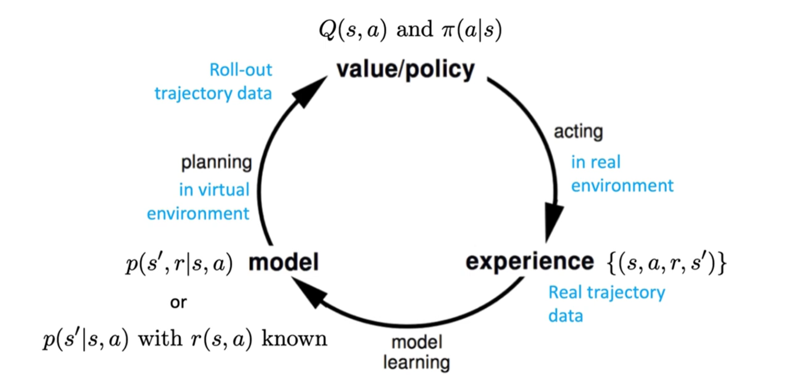
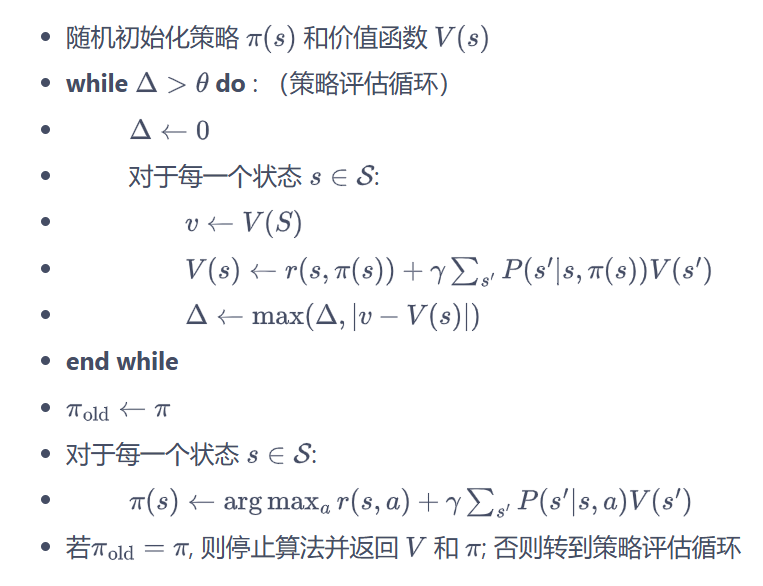
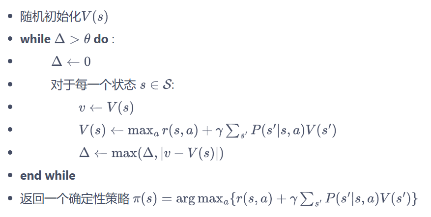

“思想总是走在行动的前面，正如闪电总是走在雷鸣之前。” — — 海涅
第三节 马尔科夫决策过程
随机过程和马尔科夫过程
与多臂老虎机问题不同，马尔可夫决策过程包含状态信息以及状态之间的转移机制。如果要用强化学习去解决一个实际问题，第一步要做的事情就是把这个实际问题抽象为一个马尔可夫决策过程，也就是明确马尔可夫决策过程的各个组成要素。
随机过程（stochastic process）是概率论的“动力学”部分。概率论的研究对象是静态的随机现象，而随机过程的研究对象是随时间演变的随机现象（例如天气随时间的变化、城市交通随时间的变化）。当前 T 时刻的状态用 表示，所有可能的状态集合表示为 。在某时刻 的状态 通常取决于 时刻之前的状态，可以表示为：
当且仅当某时刻的状态只取决于上一时刻的状态时，一个随机过程被称为具有马尔可夫性质（Markov property）。马尔可夫过程（Markov process）指具有马尔可夫性质的随机过程，也被称为马尔可夫链（Markov chain）。我们用 描述这个马尔科夫过程，其中 是状态转移概率矩阵。
下图是一个具有 6 个状态的马尔可夫过程的简单例子。其中每个绿色圆圈表示一个状态，每个状态都有一定概率（包括概率为 0）转移到其他状态，其中通常被称为终止状态（terminal state），因为它不会再转移到其他状态，可以理解为它永远以概率 1 转移到自己。

给定一个马尔可夫过程，我们就可以从某个状态出发，根据它的状态转移矩阵生成一个状态序列（episode），这个步骤也被叫做采样（sampling）。例如，从 出发，可以生成序列等。
马尔可夫奖励过程
在马尔可夫过程的基础上加入奖励函数 r 和折扣因子 γ，就可以得到马尔可夫奖励过程（Markov reward process）。一个马尔可夫奖励过程由 构成，各个组成元素的含义如下所示：
- S 是有限状态的集合。
- P 是状态转移矩阵。
- r 是奖励函数，某个状态ss的奖励 r(ss)指转移到该状态时可以获得奖励的期望。
- 是折扣因子（discount factor），γ的取值范围为 [0,1)。引入折扣因子的理由为**远期利益具有一定不确定性，有时我们更希望能够尽快获得一些奖励，所以需要对远期利益打一些折扣。**接近 1 的 γ 更关注长期的累计奖励，接近 0 的 γ 更考虑短期奖励。
回报
在一个马尔可夫奖励过程中，从第 时刻状态 开始，直到终止状态时，所有奖励的衰减之和称为回报 （Return），公式如下:
其中，Rt 表示在时刻 t 获得的奖励。 是某种回报衰减，表示我们更关心有限步长以内的回报，这样也可以帮助强化学习算法进行收敛。这个 也相当于对“绕远路”的行为做了一次惩罚。

价值函数
在马尔可夫奖励过程中，一个状态的期望回报（即从这个状态出发的未来累积奖励的期望）被称为这个状态的价值(value)。所有状态的价值就组成了价值函数（value function），价值函数的输入为某个状态，输出为这个状态的价值。
我们将价值函数写成 展开为：
在上式的最后一个等号中，一方面，即时奖励的期望正是奖励函数的输出，即 ；另一方面，等式中剩余部分 可以根据从状态 出发的转移概率得到，即：
上式就是马尔可夫奖励过程中非常有名的贝尔曼方程（Bellman equation），对每一个状态都成立。若一个马尔可夫奖励过程一共有 个状态，即 ，我们将所有状态的价值表示成一个列向量 ，同理，将奖励函数写成一个列向量 。于是我们可以将贝尔方程写成矩阵的形式：$$\nu=R+\gamma P\nu$$。
我们可以直接根据矩阵运算求解，得到以下解析解：$$\nu=(I-\gamma P)^{-1}R$$ ，以上解析解的计算复杂度是 ，其中是状态个数，因此这种方法只适用很小的马尔可夫奖励过程。求解较大规模的马尔可夫奖励过程中的价值函数时，使用动态规划、蒙特卡洛方法和时序差分，这些方法将在之后的章节介绍。
马尔科夫决策过程
马尔可夫过程和马尔可夫奖励过程都是自发改变的随机过程；而如果有一个外界的“刺激”来共同改变这个随机过程，就有了马尔可夫决策过程（Markov decision process, MDP）。我们将这个来自外界的刺激称为智能体（agent）的动作，在马尔可夫奖励过程（MRP）的基础上加入动作，就得到了马尔可夫决策过程（MDP）。马尔可夫决策过程由元组 构成，其中：
- S 是状态的集合；
- A 是动作的集合；
- 是折扣因子；
- 是奖励函数，此时奖励可以同时取决于状态 s 和动作 a；
- 是状态转移函数，表示在状态 s 执行动作 a 之后到达状态 的概率。
MDP 中的状态转移函数和奖励函数都比 MRP 多了动作 作为自变量。注意，在上面 MDP 的定义中，我们不再使用类似 MRP 定义中的状态转移矩阵方式，而是**直接表示成了状态转移函数。**这样做，一是因为此时状态转移与动作也有关，变成了一个三维数组，而不再是一个矩阵；二是因为状态转移函数更具有一般意义，例如，如果状态集合不是有限的，就无法用数组表示，但仍然可以用状态转移函数表示。
在马尔可夫决策过程中，通常存在一个智能体来执行动作。例如，一艘小船在大海中随着水流自由飘荡的过程就是一个马尔可夫奖励过程，它如果凭借运气漂到了一个目的地，就能获得比较大的奖励；如果有个水手在控制着这条船往哪个方向前进，就可以主动选择前往目的地获得比较大的奖励。
马尔可夫决策过程是一个与时间相关的，在智能体和环境 MDP 之间不断交互的过程。一般而言，它们之间的交互是如下图的循环过程：智能体根据当前状态选择动作；MDP 根据奖励函数和状态转移函数得到和反馈给智能体。智能体的目标是最大化得到的累计奖励。智能体根据当前状态从动作的集合中选择一个动作的函数，被称为策略。

策略
智能体的策略（Policy）通常用字母表示。策略表示在输入状态情况下采取动作的概率。
当一个策略是确定性策略（deterministic policy）时，它在每个状态时只输出一个确定性的动作，即只有该动作的概率为 1，其他动作的概率为 0；当一个策略是随机性策略（stochastic policy）时，它在每个状态输出的是关于动作的概率分布，然后根据该分布采样就可以得到一个动作。
在 MDP 中，由于马尔可夫性质的存在，策略只需要与当前状态有关，不需要考虑历史状态。
总言而之，原来马尔科夫过程只基于状态，现在同时基于状态和动作了，我们称其为基于策略。
我们用表示在 MDP 中基于策略的状态价值函数（state-value function），定义为从状态出发遵循策略能获得的期望回报。由于动作的存在，我们额外定义一个动作价值函数（action-value function）。我们用表示在 MDP 遵循策略时，对当前状态执行动作得到的期望回报。
不难看出，这两个函数存在以下关系：在使用策略中，状态的价值等于在该状态下基于策略采取所有动作的概率与相应的价值相乘再求和的结果：
另一方面，使用策略时，状态下采取动作的价值，等于 即时奖励 加上 经过衰减后的所有可能的下一个状态的状态转移概率与相应的价值的乘积：
综上，通过简单推导可以分别得到两个价值函数的贝尔曼期望方程：
- 状态价值函数的贝尔曼方程：
- 也可以写成期望的表示方式：
\begin{aligned} V^{\pi}(s) &= \mathbb{E}[r(S_0,A_0)+\gamma· r(S_1,A_1)+ \gamma^2·r(S_2,A_2)+... | S_0=s, \pi] \\ &=\mathbb{E}_{a\sim \pi(s)}~\left[r(s,a)+\gamma \sum_{s'\in S} \\ p(s'|s,a)V^{\pi}(s')\right] \\ &= \mathbb{E}_{a\sim \pi(s)}~\left [Q^\pi(s,a)\right ] \\ \end{aligned}
- 动作价值函数的贝尔曼方程：
接下来我们想要计算该 MDP 下，一个策略的状态价值函数。我们可以用蒙特卡洛方法来近似估计这个价值函数，好处在于我们不需要知道 MDP 的状态转移函数和奖励函数，它可以得到一个近似值，并且采样数越多越准确。
下图是一个马尔可夫决策过程的简单例子，每个浅色小圆圈旁的数字代表在某个状态下采取某个动作能获得的奖励。虚线箭头代表采取动作后可能转移到的状态，箭头边上的数字代表转移概率，如果没有数字则表示转移概率为 1。

占用度量
在强化学习中，**占用度量（Occupancy Measure）**是指在一个策略下，某个状态和动作的组合在长期内被访问的频率（数据分布）。它告诉我们，某个状态-动作对在整个策略执行过程中“出现”的概率有多大。
我们可以用一个例子来说明：
假设你是一只老鼠，在一个迷宫里寻找奶酪。迷宫有不同的房间（状态），你可以在每个房间做出选择，比如向左或向右走（动作）。你有一套策略来指导你在每个房间的行动，可能是根据闻到奶酪味道的强弱来做出选择。
占用度量就是在长期探索中，你按照这个策略走了很多次迷宫后，统计在每个房间采取某个动作的频率。例如，你可能发现自己有80%的时间在某个特定的房间里选择向右走，而在另一个房间里只有20%的时间选择向左走。
这个度量在强化学习中很有用，本质上就是某个策略和环境交互时得到的数据分布本身。它能帮助我们理解策略的行为模式，以及在改进策略时，哪些状态和动作的组合最常使用，从而帮助我们优化策略。
占用度量的公式表达为：，对于某一策略的累计奖励为：
\begin{align*} V(\pi) & = \mathbb{E}[r(S_0,A_0) + \gamma r(S_1,A_1) + \gamma^2 r(S_2,A_2) + \cdots \mid s_0,\pi] \\ & = \sum_{s,a} \sum_{t=0}^{T} \gamma^t P(S_t=s, A_t=a \mid s_0,\pi)· r(s,a) \\ & = \sum_{s,a} \rho^\pi(s,a)· r(s,a) = \mathbb{E}_\pi [r(s,a)] \end{align*}
这样，我们也可从另一角度去解读：“为什么占用度量和策略是一一对应的关系”。由于 的累和是 1/1-γ，我可以通过乘上一个 1-γ 使其变为分布。则有： ，相当于我是在某个状态下，基于某种策略 选择了一个行动 .
因此，如果有两个占用度量的分布是一样的，那么在任何状态下，他们采取的行动都是一样的，则他们的策略也必然相同。
贝尔曼最优方程
强化学习的目标通常是找到一个策略，使得智能体从初始状态出发能获得最多的期望回报。我们首先定义策略之间的偏序关系：当且仅当对于任意的状态都有 ，记为 。我们称这个策略为最优策略。
因此定义了最优状态价值和最优动作价值，同时也得到了贝尔曼最优方程。
之后，我们将使用动态规划算法求解最优策略。

动态规划算法
序言听上去挺装B的，本质意思就是：“策略迭代是 策略评估和策略提升不断循环交替 ，直至最后得到最优策略的过程。”
先回顾一下状态价值的贝尔曼方程：
也可以写成期望的表示方式：
\begin{aligned} V^{\pi}(s) &= \mathbb{E}[r(S_0,A_0)+\gamma· r(S_1,A_1)+ \gamma^2·r(S_2,A_2)+... | S_0=s, \pi] \\ &=\mathbb{E}_{a\sim \pi(s)}~\left[r(s,a)+\gamma \sum_{s'\in S} \\ p(s'|s,a)V^{\pi}(s')\right] \\ &= \mathbb{E}_{a\sim \pi(s)}~\left [Q^\pi(s,a)\right ] \\ \end{aligned}
动作价值的贝尔曼方程：
策略评估
策略评估这一过程用来计算一个策略的状态价值函数。由上式状态价值函数的贝尔曼方程可知，已知奖励函数和状态转移函数时，我们可以根据下一个状态的价值来计算当前状态的价值。因此，根据动态规划的思想，可以把计算下一个可能状态的价值当成一个子问题，把计算当前状态的价值看作当前问题。
更一般地考虑所有的状态，就变成了用上一轮的状态价值函数来计算当前这一轮的状态价值函数，即：
我们可以选定任意初始值 。根据贝尔曼方程，可以得知 是贝尔曼公式的不动点（fixed point）。由 Contraction Mapping Theorem 可知，这个不动点是存在且唯一的。然而，由于需要不断做期望方程的迭代，策略评估其实会耗费很大的计算代价。在实际的实现过程中，如果某一轮的提升非常小，可以提前结束策略评估。
策略提升
假设此时对于策略 ，我们已经知道其价值 ，也就是知道了在该策略下从每一个状态出发最终得到的期望回报。
我们要如何改变策略来获得在状态下更高的期望回报呢？假设智能体在状态下采取动作，之后的动作依旧遵循策略，此时得到的期望回报其实就是动作价值。如果我们有，则说明在当前状态下我们找到了一个更好的策略 —— 该策略只替换在状态下的策略，其余状态和保持一致。
策略迭代算法
那么我们就可以很自然地说：对于某一个策略$\pi^\prime $，在任意状态下满足 ，则有 . 这便是策略提升定理（policy improvement theorem）， 他保证我们可以直接贪心地在每一个状态选择动作价值最大的动作，以得到更好的策略。
证明用到了之前提及的贝尔曼最优公式 ，用一个例子就可以很好理解。

策略迭代算法的过程如下：对当前的策略进行策略评估，得到其状态价值函数，然后根据该状态价值函数进行策略提升以得到一个更好的新策略，接着继续评估新策略、提升策略……直至最后收敛到最优策略。

价值迭代算法
策略迭代中的策略评估需要进行很多轮才能收敛得到某一策略的状态函数，这需要很大的计算量。价值迭代算法就是一种在策略评估时只进行了一轮更新的策略迭代算法。我们将其看做动态规划问题，随机初始化 ，则转移方程可以表示为：
等到 和 相同时，它就是贝尔曼最优方程的不动点。最后我们利用 ，从中恢复出最优策略即可。

蒙特卡洛方法（Monte-Carlo methods）
MC Basic: What’s Model-Free
蒙特卡洛方法是一种基于概率统计的数值计算方法，相较于动态规划算法，他是 model-free 的，不依赖于模型，即对应的概率分布。运用蒙特卡洛方法时，我们通常使用重复随机抽样，然后运用概率统计方法来从抽样结果中归纳出我们想求的目标的数值估计。一个简单的例子是用蒙特卡洛方法来计算圆的面积。
回忆一下，一个状态的价值是它的期望回报，那么一个很直观的想法就是用策略在 MDP 上采样很多条序列，计算从这个状态出发的回报再求其期望就可以了，即：
简单来讲，假设我们现在用策略从状态开始采样序列，据此来计算状态价值。我们为每一个状态维护一个计数器和总回报，计算状态价值的具体过程如下所示。
(1) 使用策略采样若干条序列：
(2) 对每一条序列中的每一时间步的状态进行以下操作:
更新状态的计数器；
更新状态的总回报；
(3) 每一个状态的值被估计为回报的平均值 。
“当你没有模型的时候，你得有数据。” 根据大数定律,当 ，有。计算回报的期望时,除了可以把所有的回报加起来除以次数,还有一种增量更新的方法。对于每个状态和对应回报,进行如下增量式计算：
MC Exploring Starts & Greedy
对于 MC basic 的思想，我们采样出一条序列（我称其为轨迹）后，只计算起始的state-action 对的回报，这对于这条轨迹的利用率显然是极低的；一个很自然的想法就是我们计算这条轨迹上每一对 state-action 的回报，然后更新我们的策略。
然而，为了保证每一个 state-action 都至少被采样一次，Exploring Starts 算法要求从所有 pair 为起点均采过一次样，这样显然不易于操作。所以就会想：啊，要是能在某条轨迹中采样到对应的 state-action 就好了。
因此我们提出了 ，这个策略在多臂老虎机那块儿也提到过。具体来讲，我们在原来的 MC 算法中最终会通过完全贪心的方式更新策略，此时我们替换成 ，其他没啥变化。这样只要我们采样的轨迹足够长，就能保证他一定能访问到所有 state-action 了。